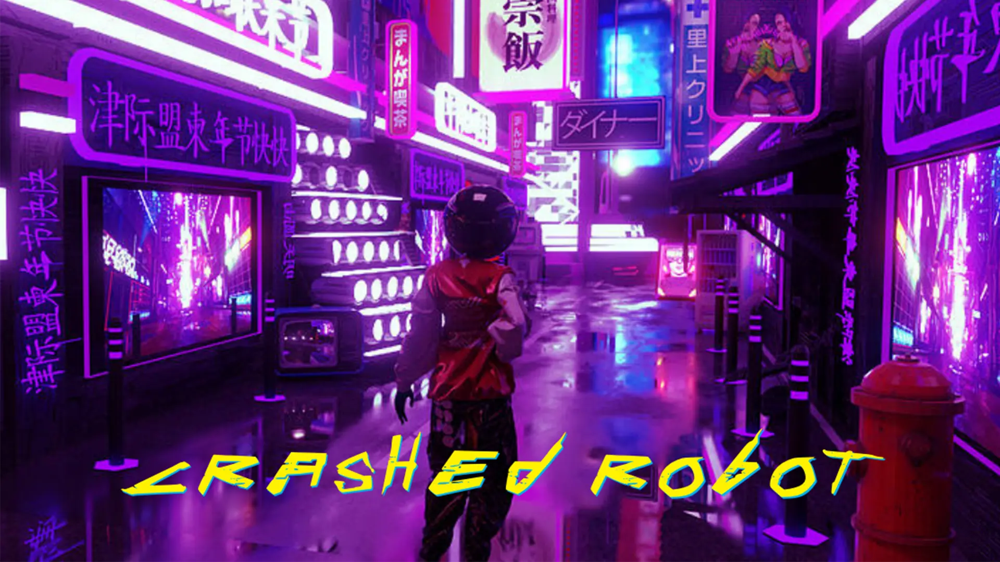

Welcome !
My name is Antoine Leroux, I have been making games since 2017.
I have knowledge in Documentation, Design, Prototyping and Programming .
I'm currently looking for a 3C or Game Designer internship, starting from july 2023.
Please find my resume and my portfolio below.
Looking forward to hearing from you.
Contact me here :
Email: lrxfr.antoine@gmail.com
Phone: +33 6 77 48 78 09
Portfolio
2022
2021

2020
2019
2018
2017
Thales
A card game about anti-submarine warfare.
Year : 2020
Time of production : 3 months
Mission : Make a promotional card game which explains anti-submarine warfare for Thales company
Team :
- Antoine LEROUX – Game Designer
- Antoine GRUGEON – Game Designer
- Arthur DELEYE – Game Designer
- Côme RICHETTA – Game Designer
- Luc VIDAL – Game Designer
- Paul PARET – Game Designer
- Manon GHIGNONI – Game Designer
- Rémi SÉCHER – Game Designer
- Simon PICARDAT – Game Designer
- Thomas DEPRAZ-DEPLAND – Game Designer
- Théodore LABYT – Game Designer
- Thibaut LE DOARÉ – Game Designer
Footage
Context
During my third year at Rubika SupInfoGame, I have been chosen to participate in a project in collaboration with Thales. The objective of the project was to explain to uninitiated people the anti-submarine warfare through a card game.
For me, this project was an opportunity because I love the underwater world and submarines fascinate me.
Team consists of 12 Game Designers.
Description
The game takes place in a context of anti-submarine warfare, an unidentified submarine entered without authorization off the coast of the Bay of Biscay. This intruding submarine is on a spy mission and will try to remain as hidden as possible in order to achieve its mission.
The Thales card game is made for 2 cooperative players featuring an underwater threat hunt. Each game lasts 30-40 minutes. Through this game, we show the various Thales equipment.
Players control a Frigate, which is a warship and a PATMAR which is a maritime patrol aircraft. The threat, which is the submarine is played by an artificial intelligence.
In each turn, the submarine fills the river with effects cards against players. The role of the Frigate is to scan the underwater depths to find where the submarine is hidden and to reveal the river cards. The PATMAR can manipulate the submarine cards, move, switch, and destroy them to recover the scenario cards. At the end, we compare the players' scores and the submarine score to determine the winner.
My Works
At the beginning of this project, all team members work on the brainstorming and the conception phase. We wanted an original, realistic, and playful card game. The first couple of weeks, we tried different prototypes. The challenge was to find ideas quickly, then design them and playtest to have the opinon of Thales before we started the production.
When bases of the game were defined, I naturally turned to the game ergonomics. Indeed, Thales card game is a card game with a lot of information, both players have a different gameplay and how the AI plays is complex to understand on the first rounds. There is also many cards with text and illustrations.
My task was to clarify the game, choose a common classification, reduce the text, make it easy to understand, illustrate the cards with realistics pictures.
Overall, I had to make a game as ergonomic as possible.
At the end of the project, I had the role to design the print & play version of the game to allow everyone to play it.
Conclusion
This project was my first project for a client: Thales. I had the opportunity to work on a topic that I am passionate about with a wonderful team. All team members that participated in the project were competent.
I also learned how to work in a big team. With 12 people, it is sometimes hard to agree on design choices, particularly during the brainstorming phase.
Awok'en
An action-adventure game.
Year : 2020
Time of production : 4 months
Mission : Make a 2D action-adventure game in top-down using Unity
Team :
- Antoine LEROUX – Project Manager
- Rémi SÉCHER – Lead Programmer
- Bastien Prigent – Game Programmer
- Steve Guitton – Game Designer
- Maelle Hanneton – Artistic Director
- Solène Krawczyk – Game Artist
- Samuel Lauro – Game Artist
- Justine Catteau – Game Artist
Footage

Context
For the second semester of my second year at Rubika SupInfoGame, we had to make an action-adventure game like the Zelda game series. It was the first real video game we made like a development studio with constraints, milestones, and deadlines.
Description
In Awok'en, you play as a cook willing to do anything to follow his faithfull shield on a great adventure to avenge a god who criticized his cooking.
To progress in the game, the player has to resolve many puzzles and to fight against different mythological creatures with the abilites of the shield. Indeed, the shield is useful to protect, pary, and destroy the enemies and to achieve the puzzles.
The climax of the game is the fight against Zeus, the final opponent.
My Works
I had the role of project manager on this team. At the beginning, I organized a weekly meeting with the team to split the different tasks we had to do during the following week. This meeting was also a time during which each member talked about his problems, worries and progress on the project. Due to the COVID-19 pandemic, my role was even more crucial to continue collobarating while quarantine.
I also worked alongside the lead programmer and we designed the enemies of the game, and that was not an easy task! In fact, the enemies' behaviors were complex with different states. At the end, the feeling is here and we have a nice fighting system with them.
I also programmed the boss with 3 different phases. I had to manage the difficulty curve during all the boss fight for the player experience. It had to be a hard fight that challenges the player with all mechanics he encountered through out the game.
In addition, I worked on the game elements to develop the puzzles, the pickups, the UI, and finally the cutscenes and the dialog system of the game.
Conclusion
This project was very exciting because I worked alongside nice people. I learned a lot, in particular thanks to the lead programmer.
On my side, due to the COVID-19 pandemic, I found out that I can work very easily and efficiently at home.
This project taught me that management is not my favorite task.
Links
Acocalypse
A pixel art roguelite.
Year : 2019
Time of production : 4 months
Mission : Make a pixel art roguelite prototype using Unity
Team :
- Antoine LEROUX – Game Programmer
- Matis DUPERRAY – Game Programmer
- Guillaume ROGE – Game Programmer
- Gauthier GOBERT– Game Designer
- Samuel LAURO – Game Artist
- Aubane RITTANO – Game Artist
- Sarocha Phansaart – Game Artist
Footage
Context
This projet was the first of my second year at Rubika SupInfoGame. For me, that was a challenge because it was the first video game using Unity I took part in. We also had to create the universe and the mechanics of the game from scratch.
Description
After many years of survival and marauding, McFury, a lone wolf, finally finds one of the last remaining soda bottles in the world. Unfortunately, the horde of the terrible El Touyoute steals the loot. No pitying is granted, and nothing will prevent McFury to get his soda back!
This is the pitch of Acocalypse, a nervous roguelite which takes place in a post-apocalyptic world. The player who plays McFury will do anything to get his soda back. To achieve this, he must cross the desert, find powerful weapons, upgrade his skills, and fight against enemies to finally beat El Touyoute to take his loot back.
My Works
On this project, I had numerous different roles.
At the beginning, I focused on Game Design: thought about universe, game mechanics, and challenges the game will offer. Then, I wrote a detailed Game Design Document about the game to work faster during the production.
When the production started, I participed in the programming. My role was to make the player's abilites, the weapons patterns, and the different types of enemies.
At the end of the project, I worked on refactoring some scripts and I made UI and menu of the game.
Conclusion
This project was a good experience. It was for me the beginning of a love story with programming. Indeed, I realised that I love to protoype quickly on a project to see what the game will look like.
I enjoyed programming the game mechanics, in particular the different weapons of the game. It was a complex programming task. It took me a month to finalize the feeling the players get when they play Acocalypse. The weapons are so much fun to play with!
Links
Habemus Papam
A board game about treason.
Year : 2018
Time of production : 8 months
Mission : Make a publishable board game
Team :
- Antoine LEROUX – Game Designer
- Edouard MURAT – Game Designer
- Thomas DEPRAZ-DEPLAND – Game Designer
- Thomas BOUTARIC – Game Artist
- Yanis HABIB – Game Artist
- Aliénor TIGNON – Game Artist
Footage
Context
This projet was my first project at Rubika SupInfoGame, in my Game Design studies. In a team of 3 Game Designers and 3 Game Artists, we had to make a board game, from no experience to a final prototype product. The theme of the board game was open and the ressources to play the game were at the expense of the team.
Description
Habemus Papam is a board game of bluff targeting 12 years and older. The game time is estimated at one hour and 3 to 4 players can play.
The goal of the game is to become the new pope and therefore the most influential person in Italy.
To do this, the player must accumulate more victory chips than his opponents at the end of the 3rd round. Many allies as well as the player influence will help control more cardinals than the opponents and thus get more favorable votes.
Influence is earned with cards laid hidden face on the table. This allows the players to lie on the card they put on the table and generate more influence. During specific phases, the players can accuse other players if they think they lie on their cards. If a player lies and is accused, he will be punished.
To help them, players can also play various Effect cards that give them bonuses or impair other players.
My Works
First, on this project, I have worked with my Game designer team mates to define the bases of the game. From the get go, our intention was to create a fun game. We spended the majority of our conception time making this goal a reality. That is why I activly participated during the conception and prototype phases.
In our team, everyone had a specific task. For my part, I was in charge of playtesting. This task involves playtesting the game to people outside of the project, take their feedback, and modify the game to make it more fun as the versions go by. Indeed, all the challenges of this project were to implement the feedback from our playtesters: create new cards, playtest them, balance the effects, playtest again.
Conclusion
This projet was difficult at the beginning because none of us had experience. As time went by, we learned to work as a team. I am proud of this board game we created in one year.
Plant VS Cafar
An augmented reality game to take care of a plant.
Year : 2019
Time of production : 1 week
Mission : Make an android mobile game in one week using the augmented reality technology in Unity
Team :
- Antoine LEROUX – Game Programmer
- Alfred VIÉ – Game Programmer
- Guillaume ROGE – Game Designer
- Matis DUPERRAY – Game Designer
- Luana TRAN GUYEN – Game Designer
- Gauthier GOBERT – Game Designer
Footage

Context
This project was during my second year at Rubika SupInfoGame. We had an intensive week to learn augmented reality technology and mobile development, which was a big challenge! I saw this project as an opportunity to claim myself as the lead programmer on the team.
Description
Lead a gardener’s life by cherishing your plant. Water it during the day, defend it against the pests at night and watch your sprouts grow as time goes by. Such is the daily life that you have decided to lead.
Plant VS Cafar is a management and defense game for one player. The goal of the game is to reach the end of the growth of the plant, that means to achieve 5 growth cycles.
The game has a day/night cycle. Indeed, when the player is in a dark environment in real life, it represents the night in the game and vice versa. The player has to water his plant the day with filling up a thirst bar and taking care of not drowning the plant. At night, the plant is attacked by cockroaches, that the player must kill before they eat the plant. To do that, the player throw flip-flops on them.
If he kills enough cockroaches and if the thirst bar is filled, the plant grows.
My Works
The whole team participated to the brainstorming phase. We wrote a lot of game concepts but some were too hard to develop in one week. We decided to develop a game concept that is more aligned with our skills.
As I mentionned, I was the main programmer during this week. I created the plant system with the evolution phase. In this phase, the plant grows up when she has enough water and nutrients. For that, I had to program a thirst bar which fills up when the player waters the plant. I also made the sprinkler system which is no other than particles that go into a trigger box.
To finish, I made the life system of the plant. It has 6 lives and when she is touched by a cockroach, she loses one. The flip-flops throw works as the same way as the sprinkler system. And at the end, I designed some parts of the UI and the assets integration.
Conclusion
I deeply enjoyed working on this project. What I enjoyed was how open the projet was.
However, we had a hard time working with the surface detection for augmented reality technology, which is not very developed in commercial phones.
Overall, the game ended up just like we imagined and it is very fun to play!
Links
Game & Watch
An orginal Game & Watch game on PC.
Year : 2019
Time of production : 2 weeks
Mission : Make Mario Bros. Game & Watch of 1983 using Unity as close as possible from the original version
Team : Solo project
Footage
Context
This projet was during my second year at Rubika SupInfoGame. It was an exercise to practice Unity and learn C# programming. The sprite sheet of the game was provided as well as a demonstration video of the original game.
Description
Play as Mario and, with the help of your faithful colleague, Luigi, try to load as many crates as possible into the truck. But beware of the falls, it breaks!
The player controls both characters, moving up and down. The game automatically moves crates forward on a conveyor belt each tick. If the player moves a crate into the truck, he is rewarded by one score point. If a crate fails, it adds one miss to the miss counter. After 3 misses, it is game over.
My Works
As this project was a solo exercise, I had to made all parts of the game.
First, I analyzed the demonstration video and more videos of the gameplay on internet. Then, I started by programming the characters movements; the player is able to play both characters and thus needs 2 different inputs for them.
After, I programmed that the crates move forward each tick, the miss counter when a crate fails, the point counter when a crate is placed into the truck, and some animations and sound effects.
Conclusion
On this project, I learned about programming, in particular how to optimize a game. Indeed, there were a lot of ways to program this Game & Watch, and as I was ahead on the exercice, I decided to refactor my scripts and optimize my game to be as close as possible from the original version.
The result is great. I almost have a perfect clone of the original Game & Watch.
Links
Steam Rush
A game jam multiplayer video game.
Year : 2018
Time of production : 2 days
Mission : Make my first video game in team in a game jam using Unity
Team :
- Antoine LEROUX – Game Programmer
- Théo VALET – Game Programmer
- Timothé HUERRE – Game Programmer
- Lucas FERRANTELLI – Third-year, Game Programmer
- Samuel BASSET – Third-year, Game Programmer
- Boris DAUVERGNE – Third-year, Game Artist
- Matthieu LEVY – Game Artist
- Quentin KERHELLO – Game Artist
Footage
Context
This projet was the first video game I made at Rubika SupInfoGame. It took place during a weekend for a game jam organized by Rubika. The thematic of the jam was "good old times". Members were free to choose their team. So with 4 peers, we form a team with 3 third-year students to learn from them.
Description
Crazy race between two trains to find out who will arrive first at the station! With the help of your crew member, supply the train with resources to increase speed while paying attention to repair regular accidents that appear.
Steam Rush is a local multiplayer game for 4 players. Teams consist of 2 players in each train with mini-games to achieve to make our train faster than the opponent train. The win condition is to be the first one to reach the station.
In the train, the players can interact with the sheitan which is a machine delivering a combo of objects that the players have to brink to him. Also with the furnace train which needs to be restock with coal, and with the steam machine which needs to be refuel with water.
To complete these requests, the players can interact with a water-pump, a cupboard with different objects inside that the sheitan needs and an elevator to get to the second floor of the train.
My Works
This video game was the first I made in a team in which each of us had a specific role. Mine was to write the Game Design Document at the beginning. In a game jam, we decide the game concept within the first hours, so I wrote maximun details about the game that could be useful later.
As we had 3 third-year students in our team, they decided to take the tasks which were more advanced for us.
On this project, I focused on Game Design. I created the game elements, feedback on the screen, controls of the player, etc.
Then, for the first time, I programmed on Unity, learned how to write a script, the windows, the tools, the possibilites of the engine.
Finally, with the help of my team mates, I made a particle system which is the train smoke in the game.
Conclusion
"What a weekend!" That is what I think of when I remember this project. Steam Rush was an enriching experience and gave me the desire to develop more video games in my free time.
For the first time, I saw people having fun with my work and it made me keep going on this field.
You Can't Survive
A 3D horror video game.
Year : 2017
Time of production : 1 week
Mission : Make my first video game in 3D using Unreal Engine 4
Team : Solo project
Footage
Context
I was in my senior year in high shcool. On my free time, I was preparing my Game Design school entrance. I needed a portfolio to show my previous project for my application.
In my portfolio, I already had some game concepts that I wrote and also video game analysis and maps which I created on video games like Minecraft, but I had never created a video game from scratch. I decided to take up that challenge and make one in one week.
Description
You are a space explorer looking for news planets... but during an expedition your ship had a problem and you crashed on a mysterious planet. You must escape from this planet as soon as possible because you are not welcome!
You Can't Survive is a horror game for one player. There is someone on the planet where you crashed: a mysterious stranger. You have to pick up 5 fuels spread on the planet to refuel your ship to leave this place.
My Works
As this video game was my first one, I utilized a OpenClassrooms tutorial on Blueprint language for programming in Unreal Engine 4. I also found a step by step tutorial on Youtube to create a video game.
Conclusion
This video game was the first I developed on a game engine. I am pround of this achievement, in particular to have learned Blueprint language. Three years later, when we studied Unreal Engine 4 at Rubika SupInfoGame, I was able to contribute to the class.
I love horror games and I created this game with inspirations of Slender, which was my favorite game in my childhood.
Links
BlueScan
A mobile game about anti-submarine warfare.
Year : 2021
Time of production : 4 months
Mission : Make an android mobile game using Unity to promote Thales equipment at warfare exhibitions
Team :
- Antoine LEROUX – Game Programmer
- Rémi SECHER – Lead Programmer
- Arthur DELEYE – Game Programmer
- Thomas DEPRAZ-DEPLAND – Game Programmer
- Paul PARET – Lead Game Designer
- Luc VIDAL – Game Designer
- Thibaut LE DOARE – Game Designer
- Côme RICHETTA – Game Designer
- Manon GHIGNONI – Game Designer
- Antoine GRUGEON – Game Designer
- Samuel LAURO – Artistic Director
- Aliénor TIGNON – Game Artist
- Solène KRAWCZYK – Game Artist
- Chloé PLUMEY – Game Artist
- Lisa FOLLET – Game Artist
- Paul CONTI – Game Artist
- Mathieu VAN CAPPELLEN – Sound Designer
- Simon PICARDAT – Producer
- Théodore LABYT – Producer
Footage


Context
For the second semester of my third year at Rubika SupInfoGame, I continued to work in collaboration with Thales in order to produce a promotional mobile game. This product will be used by Thales at warfare exhibitions to present their anti-submarine defense solutions.
The team remains the same as the Thales card game and 7 Game Artists joined us.
Description
An unidentified submarine has infiltrated the northern Philippines. Its motives are unclear, but the general staff suspects their targets are the military assets in the area. Locate and identify the submarine before it escapes.
BlueScan is a real-time strategy game for 1 player. Each game lasts 2-5 minutes. The objective of the game is to stop an enemy submarine to accomplish its mission. To achieve this goal, the player controls a Frigate, a PATMAR and a HELO, in order to detect, identify and intercept the submarine.
The Frigate is a warship equipped to detect submarines.
The PATMAR is a maritime patrol aircraft equipped to identify submerged objects. It is faster than the Frigate.
The HELO is a helicopter with a dipping sonar that can very accurately detect a submarine and intercept him.
In the main menu, there is a codex which describes all the Thales equipments and how they operate. It was one of the Thales constraints in their order.
My Contribution
From the outset, I was one of the two prototypers of the team. My task was to quickly prototype game mechanics designed by the game designers.
I worked on the submarine's behavior : its movements on the map and its interactions. I programmed the camera controller and its zoom feature. Then I made the hull sonar of the warship, which was a complex task because the first version worked exactly like a real sonar with a sweep to detect objects above the warship. After that, I programmed the airport feature for the aircraft because its fuel was limited and it had to land for refuel. For finish, I made the helicopter controller.
When the pre production was finished, I joined the programming team. We were 3 programmers and 1 lead programmer. Each of us had one aera of work to avoid bugs during the production.
For my part, I was in charge of the submarine and the interest points. The programming of the submarine was a challenging task because it is an artificial intelligence, that means the player impacts the submarine's choices and its movements during the game. The submarine is also one of the game entities which has the most abilites and, moreover, it is not physically visible on the map because it is submarged under the water. That is why the submarine feedback was very important to help the player understand the mission progression.
Conclusion
This project was very complex and very important because we worked for a client. Thanks to Thales card game, we already had the anti-submarine warfare knowledge to make this game.
From my point of view, the many constraints given by Thales sometimes limited us in our design choices and the potential fun of the game, but at the end, the client is fully satisfied with the delivered product.
The programming was perfectly planned by the team with a strict and solid programming architecture that helped us during the production.
However, the time was short to produce a professional quality mobile game without any bugs with only 4 programmers ; the prototyping phase was too long, almost 1 month, and I think we have not enough used our previous works to help us during the production.
Links
Split Me
An original ragdoll game.
Year : 2021
Time of production : 2 months
Mission : Make a concept and its proof using Unity for a game you would like to develop in the future
Team : Solo project
Footage
Context
During my third year at Rubika SupInfoGame, I had a very important test for my future career in the video game industry. Indeed, this project aimed to improve our game design skills and to make us work on the type of game we endevoured to develop in later stages of our careers. We had to produce all on our own a proof of concept which showed the feasibility of an original game concept from scratch.
Description
Split Me is a puzzle game for 1 player in which the avatar can split himself, control each part of his body, assemble them together or with game elements in order to overcome obstacles.
All the body parts have special characteristics, they are complementary and must be seen as a whole host of solutions to a problem : the puzzle.
The head of the avatar is like a ball : it moves fast by rolling and has the ability to jump.
The arms of the avatar are light and small : they move like a snake and can climb vertical surfaces.
The torso of the avatar is long and massive : it moves like a normal third person controller but it has the capacity to destroy certain objects.
My Works
At the begenning of this project, there was a lot of conceptual writing to produce : the game concept, my intentions and my capacity to realize the game I had set. You can find these documents at the end of this page.
Solo project means we had to manage our time alone, so I decided to prototype very quicky to see if the game was feasible, but a lot of problems appeared.
First, I worked on my controller : I wanted a radgoll game so I had to use the Unity physic which is quite bugged.
Then the biggest challenge of this concept was the split and the assemble mechanics : I worked with a joins system which could connect each body part with another body part or with certain game elements. That worked relatively well, but due to the physics, the mass of the elements you could assemble caused some bugs on the controller. I had to fix these issues.
Lastly, the programming of game elements, like doors, buttons, levers was very fast, so I had time to focus on level design and make my tutorial and 2 levels to show the potential of Split Me.
In summary, I spent a lot of time debugging specific situations that I had not thought of and the Unity physics engine did not help me.
Conclusion
Split Me was a fulfilling project, even if I had a lot of problems in the development. Indeed, when I realised that the ideas, the sketches, the mechanics and the concept that I had in my mind came alive and were fun, I was happy with what I made and I think Split Me showed great potential.
However, what I learnt is that making a fun physic game like Gang Beasts, Human fall flat or Ben & Ed which where my references, is more complicated than I thought, and physics needs a lot of polishing to be fun and without bugs.
Links
Download the game
Download the game concept
Download the proof of concept
Death Canyon
A 3D short adventure game.
Year : 2021
Time of production : 3 weeks
Mission : Make a greybox prototype focus on level design using Unreal Engine 4
Team : Solo project
Footage

Context
I undertook this solo project during my third year at Rubika SupInfoGame. The objective was to learn to use Unreal Engine 4 and to improve our level design skills. The given subject was to escape to a jail and the prototype had to include constraints like a puzzle to open a door, a victory screen, a progress bar, a core mechanic, etc.
Description
In a world where a mysterious virus has destroyed all civilization, the survivors live in fortified bunkers underground, fearing their fellow humans have become monsters at the surface. One day, you are chosen to go on an mission to bring back food. Crossing the terrible desert of Death Canyon, you come face to face with cannibals who knock you out and capture you. When you open your eyes, you are trapped in a cell inside of a huge canyon. The cannibals are only waiting for their lunchtime to devour you. Will you be able to escape this nightmare?
Death Canyon is a single-player adventure game. You play as a survivor who tries to escape from Death Canyon. You will need to overcome obstacles and resolve puzzles with the help of your bow.
My Works
This exercice was a solo project, that is why I had to deal with all aspects of the game on my own : the game design, the level design, the UI, the programming, find sounds and 3D assets and implement them.
Coding in Blueprint was easy for me because I already had knowledge in programming languages such as C# and their logics are quite similar when it comes to making a game. My only disappointment was that I had to scope my bow mechanic because it took a lot of time, and in the end, my arrows were not governed by physics. I had to simplify it and make it into a raycast and an impact point to trigger something.
A lot of my time was used to find free 3D models for my level design but the importation settings are complicated on Unreal Engine 4 because sometimes you need to relink all the materials by yourself. Later in the project, I used Quixel Bridget, which is a sofware linked to Unreal Engine 4 to find and import models automatically.
Conclusion
This project was quite successful from my point of view because I learned a lot about Unreal Engine 4 during this time and it gave me the desire to work with this engine again because it is very user friendly.
I managed to complete this exercise in the very short timeframe I was given, an achievement I am proud of given that a lot of students in my year had to abandon this project because the given time constraints were too demanding.
Links
Download the game
Download the game concept
Download the development document
Mario Sunshine
A prototype from an existing game.
Year : 2021
Time of production : 3 months
Mission : Prototype the core feature from an existing video game using Unity
Team : Solo project
Footage

Context
For my third yeard at Rubika SupInfoGame, I had to prototype an original core feature from a video game of my choice. This exercice was for practicing Unity and C# programming.
For my part, I chose to pick a game that I played during my childhood. This game is Super Mario Sunshine, released in 2006 on GameCube. The game core feature is the F.L.U.D.D. which is a multipurpose water pack that Mario use to spray water at objects or enemis to clean graffiti.
Description
The game takes place in the tropical setting Isle Delfino, where Mario, Toadsworth, Princess Peach, and five Toads are taking a vacation. A villain resembling Mario, known as Shadow Mario, vandalizes the island with graffiti and leaves Mario to be wrongfully convicted for the mess. Mario is ordered to clean up Isle Delfino, using a device called the Flash Liquidizer Ultra Dousing Device (F.L.U.D.D.), while saving Princess Peach from Shadow Mario.
In Super Mario Sunshine, the player controls Mario and can use his water spray by pressing an input. As the player continues to spray water, the amount of water in its tank will gradually get lower. He can refill the tank from a water source. With the F.L.U.D.D. equipped, he can switch between the Squirt Nozzle and either the Hover, Rocket, or Turbo Nozzle to clean graffiti and overcome obstacles.
The Squirt Nozzle is the basic jet, which allows Mario to spray water in the direction he is facing.
The Hover Nozzle allows to Mario to hover in the air for about 4 seconds, with slowly increasing altitude while in effect.
The Rocket Nozzle allows Mario to blast upwards on a stream of pressurized water after charging up for a brief period of time.
The Turbo Nozzle allows Mario to move quickly across land or water.
My Works
When you develop a prototype of an existing game, you need to be as close as possible to the original version.
That is why, in the first place, I took a lot of time to make a controller and a camera system closely ressembling the orignal ones using Character Controller and Cinemachine on Unity.
Then, I programmed the F.L.U.D.D. behavior with its differents nozzles. That was my favoriste task on the project because there was a lot to do : play the original game again to get a feel for the details of the mechanics and the feedback. Next, I was able to prototype them on Unity with taking my time to balance them perfectly.
The hardest task was the cleaning mechanic with spraying water. Indeed, I searched a lot on internet and nobody had already prototyped it, but the mechanic seems to be close as the Splatoon game mechanic. The trick is to change the pixels of an image where the water particles collide, but this techique used shader programming and I did not have time to learn it. My solution was thus to use the Decals in HDRP Unity project. The Decals are used in video games today for bullet impacts on surfaces. In my case, I used Decals by placing them on the map, and when water collides with them, I decreased the fade factor, which is an option on Decals to reduce the alpha of the image.
For finish, I made the UI and the animations to have feedback when you spray water and with which nozzle you fire, like the original game.
Conclusion
I love remaking existing games like the Game & Watch exercice I had done before, and I had the same feeling for Super Mario Sunshine. I learnt a lot about this kind of exercice because you can understand why developers had to make certain choices on the games when you try to prototype them by yourself.
However, if I had more time, I would've liked to improve the cleaning mechanic by clearing graffiti pixel per pixel on animated sprites like the original game.
Links
Apex Legends
Injection into a video game system.
Year : 2021
Time of production : 2 weeks
Mission : Design a systemic element ready to be integrated into the existing game system
Team : Solo project
Footage
Context
To start my third year at Rubika SupInfoGame, I had to undertake a game design task pertaining to system design. This exercice was focused on recent courses we had about the systems : rules, loop type, tokens, etc.
The goal was to conceive an element that could be integrated into an already existing game system. Secondly, we needed to prove the interest and adequacy of the system by comparison, positioning, simulations, and demonstrations. The constraints were to not modify the system, we could only add to this system and we were free to use other elements from the system. We had to respect the parameters from the item type we chose in the system.
A good example of a new element into a system will be a new item in League of Legends.
Description
Apex Legends is a battle royale in which trios compete. Several champions with different characteristics and abilities are available, as well as a wide choice of weapons to defeat his rivals and lead his team to victory!
I chose to create a new weapon in Apex Legends because I have extensive experience playing this game (more than 800 hours), so I believed I could conceive a fresh and original weapon for players based on the existing weapon system which I know well.
My Works
At the begenning, I had to make a lot of different versions to find a weapon concept which I liked as a game designer but also as a player. Then, I analysed all the weapons in the game to compare them : damage, mag size, mag number, reload time, firemode, time to kill, etc. After that, I was able to situate the weapon that I had created compared to the others. The final step was to simulate its behavior. For that I chose to use Machination which is a platform to design, balance and simulate game systems. Once the diagram was done, I could implement the weapon on a prototype using Unity to show it in game situations.
You can find the final documents that I produced at the bottom of this page.
Conclusion
I had already undetaken numerous different game design projects but this one was very special, because it was a big game design package with all the skills I learnt in these 3 years. Morever, I worked on a lot of aspects of the game making process in this exercise : conception, analysis, systemic, prototyping, etc.
I am proud of myself because I had good feedback from the people who read this document and they all understood and valued my work.
Links
Download the prototype
Download the system conception document
Pirate Academy
A WarioWare game.
Year : 2021
Time of production : 2 months
Mission : Make a WarioWare-like game in a massive team of 45 game designers using Unity
Team : 45 game designers
Footage

Context
This project took place at the begenning of my third year at Rubika SupInfoGame. With a team of 45 game designers, we had to conceive a WarioWare game from scratch, like a game development studio. Indeed, we had to respect WarioWare base constraints, such the mini-games, the growing difficulty, the rhythm, etc.
Description
In Pirate Academy, you lead a crew of pirates who sail from island to island, trying to survive the mini-games and reach the boss in order to get their pirate degree.
To travel between islands, the pirates need to succeed in a chain of several mini-games. The difficulty of these mini-games will increase every time the pirates win, and, if they lose, the ship will be damaged. Moreover, the pirates have a chance to find a reward when they reach an island. The final goal is to defeat Black Passe-Câle, an old pirate student.
My Works
This project was my first time working in such a big team, especially given there were only game designers. The most important task was to devise a clear and efficient organisation of the workload, that is why the team was divided into various trios and each had to create 3 mini-games.
With my two teamates, I worked on the game design of these three mini-games, then we took on specific roles. I programmedthe majority of each mini-game, developed features and sub-features, implemented graphic assets and sounds into the game.
When the game was nearly finished, a QA team was formed and I decided to join it, given that our mini-games were already finalised. A lot of the other mini-games were not finished and bugs still persisted, due the varying degree of programming competency amongst the trios. My job was to help them, fix the bugs and to correct game design problems to make the mini-games more fun. That was major a challenge because there were 11 trios and 33 mini-games at the end!
Conclusion
This project was for me an enriching experience because it showed me how a 45 members studio looks like.
I think that the organization and the teams was too horizontal and there was a lack of leadership and of specific roles that usually take on decision-making responsabilities. Reflecting on this experience, I wish I could have joined the main programmers team to make the game bigger and more ambitious from a macro standpoint.
FarmoBot
A mecha cooperation 3rd person game.
Year : 2022
Time of production : 9 months (Work in progress)
Mission : Make an one year video game production
Team :
- Antoine LEROUX – 3C Designer
- Guillaume ROGE – Tech Game Designer
- Timothé HUERRE – Game Designer
- Jean-Baptiste OSES – Lead Programmer
- Kévin DELCROIX – Game Programmer
- Tao PECQUERIAUX – Lead Artist
- Quentin KERHELLO – Vehicle Artist
- Marco LANDO – VFX Artist
- Matis DUPERRAY – Sound Designer
- Théodore LABYT – Producer
Footage

Context
I have been working as a part of a team of 10 people on this game that will be the result of our fifth and last year at Rubika SupInfoGame. The polished vertical slice of this original game concept is due June 2023.
Description
In the near future, mechalovers are fleeing the technological society to live in autarchy in a small homemade village into the wild. But one day, a property developer robot from the society wants the mechalovers' land to build a shopping mall! The mechalovers will fight together to preserve their land from a robot invasion.
FarmoBot is a 3rd person action game in which players control mechas. The day, they use agricultural tools to take care about of their harvests and once night has fallen, they defend their land against robots from the society who want to destroy everything. The goal is to harvest enought food to pay the property developer robot.
My Works
I am the 3C designer of FarmoBot. My main responsibility is to develop the mecha controller. In order to achieve this, I created the mecha's design and thought about its features : how he moves, what his abilities, how to emphasise the heaviness of the mecha when the player controls it and the camera angle.
On another note, I also work on the agricultural tools that can be used by the mecha. Indeed, they change the mecha controller like a human when he uses a car. As a player, we need to feel that we are using a harvester for example.
My work methodology is to start to design on paper with sketches, go into Unreal Engine 5 to prototype in Blueprint, analyse the feeling, take the feedback into account and try numerous different variations until I get a polished result.
Conclusion
FarmoBot is still in progress, we just finished our pre-production and we are ready to make this game as good as we can.
My role on the project is very challenging because the mecha controller is imperative for the player experience and it is one of our main gameplay promises and selling points for the game.
FRAG Pro Shooter
An arena shooter on mobile.
Year : 2022
Time of production : 4 months
Mission : Work with the design core team as a game design intern
Team : 30 workers
Footage
Context
This summer internship took place between my fourth and my fifth year at Rubika SupInfoGame with Oh Bibi. Oh Bibi is a mobile video game studio at Paris created in 2012 by two formers Gameloft employees. They make mobile live games and they are especially known for their racing games and FRAG Pro Shooter downloaded more than 100 million times with 500 000 daily active users.
Description
Build you battle deck with more than 100 unique characters, enter the arena and fight against players in real time! Frag the opponents, destroy their bases and switch between your heroes to get the advantage and win the battle.
FRAG Pro Shooter is a FPS/TPS game in which two teams of 5 heroes compete. The goal is to attack opponent bases or frag enemis to win points. The player can control one of his 5 heroes, the other are controlled by the AI. A hero is composed of his life, his movements, his attack and his ability.
My Works
As an intern, I was somewhat of a jack of all trades.
I started with the balancing of the heroes. There are more than 100 characters in the game and every two months, a new one is released! In this way, I realised the buffs & nerfs of 10 heroes per month in order to fix them, make them balanced in the current meta and rework them for more fun based on analyses and according to the daily players reviews.
Then I was in charge of creating two new heroes for the august and october updates. I started from scratch, imaging an entirely new idea for a hero, made a design document, taking aboard the feedback from the other designers and presented a final proposition to the whole team. After they were released, I ensured that my vision of the heroes was respected by the art and the programming teams.
At the end of my internship, I focused on missions rework. Like many mobile games, there are daily, weekly and seasonal quests in FRAG Pro Shooter giving currencies and exprience points. The problem was that the missions were not user-friendly, didn't generate enough money for the studio, seemed somewhat archaic and were ultimately not challenging. To solve this, I created tutorial missions for the game onboarding with growing difficulty, attractive rewards like exlusive heroes or emotes, fun and not repetitive quests, etc...
Conclusion
This game design internship was for me a rewarding experience because I was in charge of important tasks, I used my skills in the game design, the balancing, the UI and even the programming and it gave me a lot of insight into the development of a mobile game.
On the other hand, I'm not sure that I want to work in mobile game studio for the reason that the pace of development is very intense and frustrating because in my opinion we don't have the time to make polished design and we need to always be 100% creative as a designer to respect the updates constraint. In addition, the discussion about money comes back in all features design. I hope that is only specific to mobile games.
Links
Download the game
Nad game design document
Mayra game design document
Smash It Up
A 2D party game.
Year : 2022
Time of production : 4 months
Mission : Realize a game in order to publish it on Steam.
Team :
- Antoine LEROUX – Game Programmer
- Julien HAIGRON– Game Programmer
- Gauthier Gobert – Game Designer
- Théo Valet – Game Designer
- Marianne Cetkovic – Project Manager
Footage
Context
This projet started at the beginning of my fourth year at Rubika SupInfoGame. We formed a team of 5 and from a entirely original idea, we had to conceive a video game which could be publishable on steam.
Description
Smash It Up is a local multiplayer party game from 2 to 4 players. The players play funny little beasts who fight each other with a plastic hammer! The goal is to earn points in as much mini-games as possible to win the golden hammer.
My Works
On this project, I did not participate much in the game design's conception.
My time was fully occupied with the programming. Indeed, I was in charge of developing all of the game features except the controller : the rules of the mini-games, the level design elements, the transitions for scene to scene and the score system were all my exclusive reponsability.
During the whole project, I focused on flexible code which means that we could easily change parameters like the players number, the mini-games earned points, the maps pool, the rounds duration, etc... without creating bugs.
Conclusion
Smash It Up is one of my most frustating project because I'm not satisfied with the result.
The game lifetime is very short and the fun is not here : only few maps, less than 10 mini-games and a controller not enough user-friendly. An oversized scope at the beginning, nobody to manage the team and a lack of games references were the problems.
Furthermore, I only did programming and I don't want to work as a programmer later. I had the feeling that only myself could program because nobody else could carry this role on the project . Indeed, the team was composed of 2 level designers, 1 narrative designer and 1 first year programmer who never develop on Unity before.
At the end, I do not regret the project because it confirmed me that I want to take part in the game design but at the same time in the programming like a technical game designer or a 3C designer. I also learned a lot from the mistakes we made as a team and finally we never gave up the project because we tried to save it until the end.
Crashed Robot
A blocking map on Unreal Engine 4.
Year : 2022
Time of production : 2 weeks
Mission : Realize a level design map with high emotions
Team : Solo project
Footage

Context
This projet took place during my fourth year at Rubika SupInfoGame. The goal was to build a blocking on Unreal Engine 4 with intentions based on player emotions.
Description
In a cyberpunk universe, the technology and robotics are omnipresent. Robots play an essential role to the development of this eldorado. This utopian world places the player in a city where humans are glorified and robots are only useful to satisfy their desires. The player plays as a failing robot, deemed useless as he was deprived of his functions and thrown to the dump in several parts.
My Works
The main level intention is to propose a spectacular opening scene to an adventure : a perilous ascent leading to the discovery of a divided society.
To this end, I wanted that the player's journey to be contrasted. Indeed, the level begins with the opposition between luxurious and poor and as the same time as the player progresses in the level, he discovers the danger of the city like the street fights and the guards who defend the human residences. During his progression, the player is increasingly free with recovering parts of his robot which allow him to run, jump and attack.
Conclusion
I saw this project like a way to master Unreal Engine 4. I spent a lot of time on details but which improve the player experience like the differents view points into the level, the work about lights to indicate the path, the blocking immersion with places description, etc...
Links
Acid Laboratory
An Unreal Tournament 4 map.
Year : 2022
Time of production : 1 month
Mission : Design a level design map for Unreal Tournament 4
Team : Solo project
Footage
Context
During my fourth year at Rubika SupInfoGame, I was given this assignment with the objective to design a level design map for a fast FPS : Unreal Tournament 4. The constraints were deathmatch mode with 4 players and the map needed to reflect narrative and gameplay intentions.
Description
My gameplay intention was to offer to players an evolutive map in order to challenge them to adapt their movements and strategy throughout the game.
For the narrative part, the level takes place in an old laboratory, split in several rooms which suffers of acid leaks.
My Works
To ensure these intentions, I think about acid which fills up into the level at specific time. In this way, I start to draw my 2D level design view of the map on paper. I wanted a map which could be play without the acid and still challenging thanks to shortcuts and with the acid by limiting the player navigation. Once my sketches were done, I realized the blocking into the engine and add some feedback like neon lights to inform the players of the acid height. Finally, I organized playtests to balance the level design : adjust paths, add bonus & weapons, increase the acid damages.
Conclusion
This project was a good way to learn about injecting level design into an an existing game. I learned to analyse the game maps and their level design before suggesting mine. I really appreciated to program the acid feature and to watch people playing my level and having fun because it is always surprising to see an evolutive map.